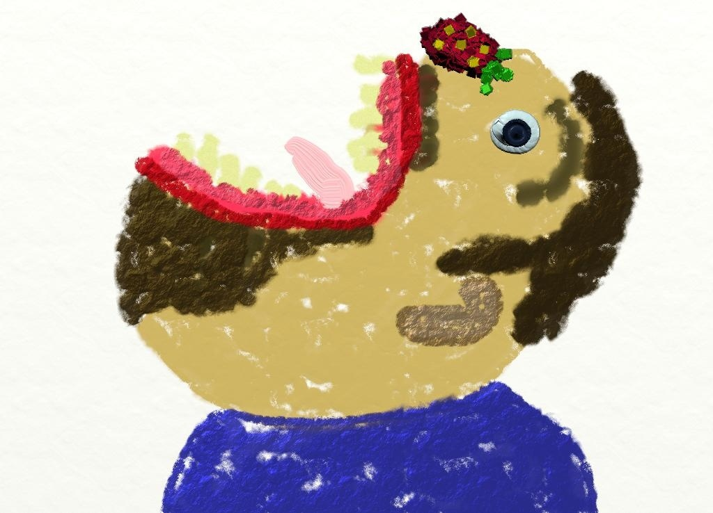

My Son Eating Corn


My son has a corn tooth. That boy loves to eat it right off the cob like a little typewriter. Chick Chick Ding. Looking at him chew. That’s some good corn. Nubbley.
Related posts

Kellogg Layoff Result: Corn Pops Rebranded Gold Tooth Crunch
Due to recessionary concerns, the Kellogg Company has asked it’s Kellogg’s ® division to recycle some of their old cereal…

Cheating Husband and Mistress Condemned by Wet Napkin
A woman who was suspicious of her husband having an affair hired a private investigator to install a GPS with…

I'm Cornbread Eating Mad
I'm cornbread eating mad. I was at the fruit store looking for come jujuberries and this little girl starts looking…

Jealous Horse Loses Eye, Rainbow Horn Unicorn to Blame
A unicorn is a wonderful thing. The very best unicorns have rainbow horns and like to drive around in cars…